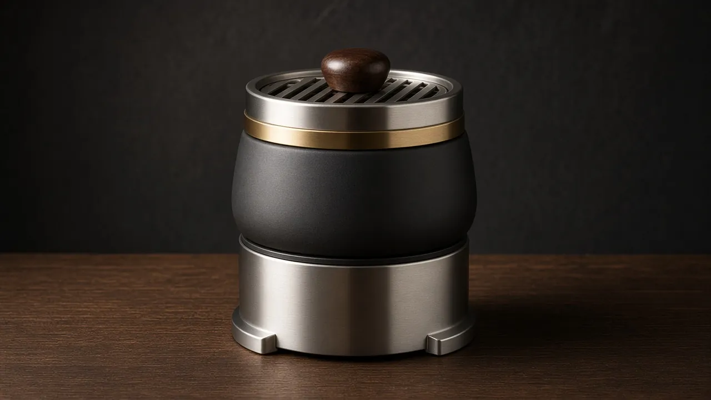

Smart HMD
Tüm modellerde standart akıllı lüle. Ek veya yedek başlık; PID kontrollü seramik ısıtıcı.
Kırılan, yıpranan ya da yükseltmek istediğiniz her parça ayrı satılır. Tüm NARION modelleri aynı 45° bayonet kilit standardını kullanır; parça seçerken aşağıdaki uyumluluk tablosuna bakın.

Fiyatı sitede yayımlanmış parçalarda fiyat gösterilir; diğerleri talep üzerine teklif edilir.
Tüm modellerde standart akıllı lüle. Ek veya yedek başlık; PID kontrollü seramik ısıtıcı.
NARION için özel tasarlanan mat siyah seramik phunnel lüle; 45° bayonet tabanıyla tüm modellere oturur. Smart HMD yerine klasik içim için.
Paslanmaz çelik közlük; ayarlı hava halkası ve ceviz tutamak. NARION Klasik Lüle ile eşleşir.
Modele özel form ve kapasite; boyun ağzı 45° bayonet yakaya göre taşlanmış. Opsiyonel cam alternatifi.
Paslanmaz çelik yaka, cam boyna sabitlenir; şişe–gövde, gövde–tepsi ve marpuç çıkışı için aynı kilit profili.
Aroma tutmayan floroelastomer contalar; yıllık değişim önerilir.
Yıkanabilir, koku tutmayan silikon marpuç; bayonet uçlu bağlantı.
Hijyenik silikon ağızlık (5'li) ve metal ağızlık seçenekleri.
Lüle altı paslanmaz tepsi; kül ve sıcak parçaları masadan uzak tutar.
Sessiz çekiş için daldırma borusu ucu.
Seans bölünmeden değiştirilebilen yedek lityum batarya.
Smart HMD için manyetik şarj doku.
Parça görselleri tasarım/ürün görselleridir; üretim parçası küçük farklılıklar gösterebilir.
Klasik cam şişe yalnızca şeffaf hazneli modeller için sunulur; 45° bayonet metal yaka ile gövdeye kilitlenir. Görseller model fotoğraflarından kırpılmıştır. KOZA (camsız gövde) ile LADİN, OCAK, FENER, NOMAD ve ARDIÇ (kapalı gövde) için klasik cam şişe yoktur.
Elektrik kullanmayan klasik içim için NARION'a özel lüle ve közlük. Lüle tabanı tüm modellerdeki 45° bayonet kilide oturur; közlüğün ayarlı hava halkası ısıyı dengeler. Fiyat talep üzerine.

Bayonet kilit 17 modelde ortaktır. Marpuç ve conta seti KOZA · LADİN · MANOLYA için ortaktır; üretim programındaki modeller için ölçüler teyit edilecektir.
| Model | Klasik cam şişe | 45° bayonet yaka | Marpuç & conta seti | Standart lüle | NARION Klasik Lüle | NARION Közlük |
|---|---|---|---|---|---|---|
| NARION KOZA | Ayrı şişe yok (camsız gövde) | ✓ Ortak standart | ✓ Ortak set | Smart HMD (standart) | ✓ 45° bayonet | ✓ Klasik Lüle ile |
| NARION LADİN | Uygulanmaz (kapalı gövde) | ✓ Ortak standart | ✓ Ortak set | Smart HMD (standart) | ✓ 45° bayonet | ✓ Klasik Lüle ile |
| NARION MANOLYA | Cam şişe — 800 ml | ✓ Ortak standart | ✓ Ortak set | Smart HMD (standart) | ✓ 45° bayonet | ✓ Klasik Lüle ile |
| NARION SERVİüretim programı | Cam şişe — 950 ml | ✓ Ortak standart | Teyit edilecek | Smart HMD (standart) | ✓ 45° bayonet | ✓ Klasik Lüle ile |
| NARION PRİZMAüretim programı | Cam şişe — 700 ml | ✓ Ortak standart | Teyit edilecek | Smart HMD (standart) | ✓ 45° bayonet | ✓ Klasik Lüle ile |
| NARION OCAKüretim programı | Uygulanmaz (kapalı gövde) | ✓ Ortak standart | Teyit edilecek | Smart HMD (standart) | ✓ 45° bayonet | ✓ Klasik Lüle ile |
| NARION FENERüretim programı | Uygulanmaz (kapalı gövde) | ✓ Ortak standart | Teyit edilecek | Smart HMD (standart) | ✓ 45° bayonet | ✓ Klasik Lüle ile |
| NARION NOMADüretim programı | Uygulanmaz (kapalı gövde) | ✓ Ortak standart | Teyit edilecek | Smart HMD (standart) | ✓ 45° bayonet | ✓ Klasik Lüle ile |
| NARION AURAüretim programı | Cam şişe — 850 ml | ✓ Ortak standart | Teyit edilecek | Smart HMD (standart) | ✓ 45° bayonet | ✓ Klasik Lüle ile |
| NARION MONOLİTüretim programı | Cam şişe — 800 ml | ✓ Ortak standart | Teyit edilecek | Smart HMD (standart) | ✓ 45° bayonet | ✓ Klasik Lüle ile |
| NARION İNCİüretim programı | Cam şişe — 700 ml | ✓ Ortak standart | Teyit edilecek | Smart HMD (standart) | ✓ 45° bayonet | ✓ Klasik Lüle ile |
| NARION YALINüretim programı | Cam şişe — 750 ml | ✓ Ortak standart | Teyit edilecek | Smart HMD (standart) | ✓ 45° bayonet | ✓ Klasik Lüle ile |
| NARION ZEYTİNüretim programı | Cam şişe — 650 ml | ✓ Ortak standart | Teyit edilecek | Smart HMD (standart) | ✓ 45° bayonet | ✓ Klasik Lüle ile |
| NARION ARDIÇüretim programı | Uygulanmaz (kapalı gövde) | ✓ Ortak standart | Teyit edilecek | Smart HMD (standart) | ✓ 45° bayonet | ✓ Klasik Lüle ile |
| NARION KEMERüretim programı | Cam şişe — 750 ml | ✓ Ortak standart | Teyit edilecek | Smart HMD (standart) | ✓ 45° bayonet | ✓ Klasik Lüle ile |
| NARION YÖRÜNGEüretim programı | Cam şişe — 700 ml | ✓ Ortak standart | Teyit edilecek | Smart HMD (standart) | ✓ 45° bayonet | ✓ Klasik Lüle ile |
| NARION ÇAKILüretim programı | Cam şişe — 600 ml | ✓ Ortak standart | Teyit edilecek | Smart HMD (standart) | ✓ 45° bayonet | ✓ Klasik Lüle ile |
Not: Elektronik parçaların (Smart HMD, batarya, şarj doku) satışı ve teslimatı, ülkeye göre mevzuata tabidir; teklif aşamasında teyit edilir.
KOZA, LADİN ve MANOLYA aynı bayonet standardını kullandığı için conta ve marpuç üçünde de aynı parçadır; NARION Klasik Lüle ve Közlük 45° bayonet tabanla tüm modellere uyar. Kafe üç farklı model kullansa bile tek yedek parça seti stoklar; yanlış parça sipariş etme ihtimali ortadan kalkar.
Aşağıdaki hedef perakende fiyatlarıdır. Bayi fiyat listesi ve adet kademeleri talep üzerine, imzalı gizlilik anlaşması sonrası paylaşılır.
| Parça | Hedef perakende | Uyumluluk |
|---|---|---|
| Klasik cam şişe (45° bayonet yaka) | Talep üzerine | Şeffaf hazneli 11 model (bkz. Model şişeleri) |
| NARION Klasik Lüle | Talep üzerine | Tüm modeller |
| NARION Közlük | Talep üzerine | Tüm modeller (NARION Klasik Lüle ile) |
| Yedek marpuç — silikon | 29 $ | Üç modelde de aynı |
| FKM O-ring seti | Talep üzerine | Üç modelde de aynı |
| Silikon ağızlık (5'li) | Talep üzerine | Modele özel |
| Difüzör ucu | Talep üzerine | Modele özel |
| Klasik nargilede | NARION'da | Neden |
|---|---|---|
| Cam şişe kırılması | Yalnızca cam yenilenir | Klasik cam şişe 45° bayonet yakayla bağlanır; cam kırılırsa metal yaka yeni cama takılır, yalnızca cam yenilenir. |
| Kil lüle çatlaması | Tasarımdan çıkarıldı | Tüm modellerde standart lüle NARION Smart HMD akıllı lüledir; kil lüle yoktur. Klasik içim için NARION Klasik Lüle (mat siyah seramik, 45° bayonet taban) ve NARION Közlük ayrı parça olarak sunulur. |
| Valf arızası | Tasarımdan çıkarıldı | Bilyeli valf yok; diyafram sökülüp yıkanır. |
| Diş sıyırması | Tasarımdan çıkarıldı | Vidalı birleşim yok; bayonet 45°'lik tek hamlede kilitlenir. |
| Conta yaşlanması | Planlı yedek | FKM O-ring ucuz bir sarf kalemidir; yıllık değişim önerilir. |
45° çevir, kilitlenir. Vida yok, diş sıyırması yok.
Aynı yaka, conta ve adaptör tüm modellerde; yanlış parça riski düşer.
Cam şişe kırılırsa metal yaka yeniden kullanılabilir; yalnızca cam yenilenir.